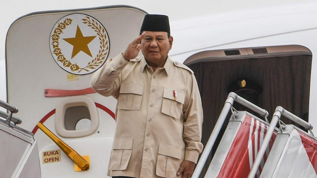

Kebijakan dan Kontroversi Jelang 100 Hari Pemerintahan Prabowo
Purwakarta, AboutNEWS -- menuai catatan kritis. Mulai dari cawe-cawe di Pilkada Serentak 2024 hingga kabinet jumbo yang kontroversial. Pelantikan Prabowo sebagai presiden memang berimpitan dengan jadwal Pilkada Serentak 2024. Posisinya sebagai Ketua Umum Partai Gerindra juga membuatnya tak lepas dari berbagai konstelasi politik. Calon gubernur DKI Jakarta Ridwan Kamil pernah mengunggah foto makan bersama Prabowo. Mereka santap malam bersama di sebuah rumah makan di Jalan Sabang, Jakarta Pusat, Kamis (31/10).
Prabowo juga pernah bertemu paslon Gubernur-Wakil Gubernur Bali Made Muliawan Arya alias De Gadjah dan Putu Agus Suradnyana, Minggu (3/11). Prabowo menyampaikan harapan pasangan itu memenangkan Pilgub Bali 2024.
Mahfud Ingatkan Prabowo: Katanya Mau Kejar Koruptor Sampai Antartika Momen lainnya adalah video dukungan Prabowo untuk Andra Soni-Dimyati di Pilgub Banten. Melalui akun media sosial @luthfiyasinofficial, Sabtu (9/11), Prabowo mengajak warga Banten memilih pasangan tersebut. Tak sampai di situ, Prabowo juga cawe-cawe menjelang hari pemungutan suara Pilgub DKI Jakarta. Dia menulis surat agar masyarakat Jakarta memilih Ridwan Kamil dan Suswono.
Campur tangan Prabowo di pilkada menuai kritik. Pengamat politik Universitas Andalas Asrinaldi menilai Prabowo seharusnya tidak melakukan hal itu karena sudah berstatus presiden. Ia khawatir dukungan Prabowo mempengaruhi netralitas aparat negara. "Itu akan berdampak secara psikologis kepada aparatur negara yang ada di bawah itu. Paling tidak ada fasilitasilah, kemudahan-kemudahan yang mereka dapatkan dalam konteks kampanye,"
Calon Gubernur Banten dan Jawa Tengah yang mendapat dukungan Prabowo, berhasil memenangkan pilkada. Sementara itu, paslon yang didukung Prabowo di Jakarta dan Bali kalah. Istana membantah Prabowo melanggar aturan hukum dengan dukungan itu. Mereka menilai Prabowo berhak melakukan hal itu karena status ketua umum partai. "Tidak ada aturan yang melarang Pak Prabowo meng-endorse calon. Pak Prabowo adalah ketua umum partai," kata Kepala Kantor Komunikasi Kepresidenan Hasan Nasbi lewat keterangan tertulis.
Kabinet gemuk Prabowo membangun kabinet gemuk. Ada 48 menteri, lima kepala lembaga, dan 56 wakil menteri di Kabinet Merah Putih. Tak hanya itu, Prabowo juga menunjuk sejumlah tokoh sebagai penasihat khusus, urusan khusus, dan staf khusus presiden. Ada tujuh orang penasihat khusus, tujuh orang utusan khusus, dan satu orang staf khusus yang dilantik, Selasa (22/10). Ekonom senior Indef Fadhil Hasan menilai kabinet gemuk akan memperlambat kerja pemerintahan. Menurutnya, ini tak sesuai visi Prabowo yang ingin cepat membangun Indonesia.
Dia menyoroti sulitnya koordinasi di antara banyaknya kementerian. Fadhil berpendapat ego sektoral akan muncul di tengah kabinet ini. "Jadi yang tidak terbayangkan itu bagaimana Pak Prabowo mengorkestrasi gerak dari kabinet yang super gemuk. By default, orang gemuk itu pasti lamban, tidak bisa lari. Kalau lari pun terseok-seok, dikalahkan yang lebih ramping. Jadi, size itu matters dalam hal efisiensi," ucap Fadhil dalam acara diskusi publik Indef pada Selasa (22/10). Kemudian, muncul kontroversi di publik saat anak buah Prabowo ramai-ramai meminta tambahan anggaran. Misalnya, Menteri HAM Natalius Pigai yang mengajukan tambahan anggaran Rp20 triliun.
Belakangan, efektivitas pembantu Prabowo dipertanyakan. Terlebih lagi usai peristiwa penghinaan oleh Utusan Khusus Presiden Miftah Maulana Habiburrahman terhadap seorang pedagang es teh bernama Sunhaji. Miftah, Utusan Khusus Presiden Bidang Kerukunan Beragama dan Pembinaan Sarana Keagamaan justru mengolok-olok pedagang saat dirinya berdakwah. Berbagai petisi digalang agar Prabowo mencopot Miftah dari jabatannya. Selain itu, Direktur Eksekutif Parameter Politik Indonesia Adi Prayitno meminta Prabowo mengevaluasi para pembantunya.
"Saya kira Prabowo harus mengevaluasi serius orang-orang sekitarnya yang suka blunder dan menodai kecemerlangan citra Prabowo sebagai presiden. Jangan sampai nila setitik rusak susu sebelanga," ucapnya. Miftah menyatakan pengunduran diri setelah dihujani kritik. Prabowo menghargai pengunduran diri itu dan menyebut Miftah ksatria. Hak asasi manusia Persoalan HAM menjadi bayang-bayang Prabowo bahkan sejak sebelum dilantik. Dugaan keterlibatannya di kasus pelanggaran HAM 1998 terus membuntuti karier politiknya sejak Pemilu 2009.
Sesaat setelah menjadi presiden, keberpihakannya pada penuntasan kasus HAM berat langsung menjadi sorotan. Tidak lain dan tidak bukan karena pernyataan Menteri Koordinator Bidang Hukum, HAM, Imigrasi dan Pemasyarakatan Yusril Ihza Mahendra. Yusril mengatakan Indonesia tidak punya kasus pelanggaran HAM berat beberapa dekade terakhir. Bahkan, ia menyebut kasus 1998 bukan pelanggaran HAM berat. "Dalam beberapa dekade terakhir ini hampir bisa dikatakan tidak ada kasus-kasus pelanggaran HAM berat," ungkap Yusril di Istana Kepresidenan Jakarta. Saat ditanya apakah peristiwa 98 termasuk pelanggaran HAM berat, Yusril menjawab, "Enggak."
Isi Pasal 55 KUHP yang Bisa Bahayakan Prabowo Jika Maafkan Koruptor Pernyataan itu menimbulkan kritik keras dari aktivis HAM. Amnesty International Indonesia menyebut pernyataan itu bukan hanya tak akurat, tetapi juga menunjukkan sikap nirempati pada korban yang mengalami peristiwa maupun yang bertahun-tahun mendesak negara agar menegakkan hukum. "Ini sinyal buruk pemerintahan baru yang mengaburkan tanggung jawab negara terutama pemerintah dalam menuntaskan kasus-kasus pelanggaran HAM yang berat di masa lalu," kata Amnesty International Indonesia dalam pernyataan tertulis. Keesokan harinya, Yusril mengklarifikasi pernyataannya itu. Dia menegaskan komitmen pemerintah menuntaskan kasus-kasus pelanggaran HAM berat masa lalu.